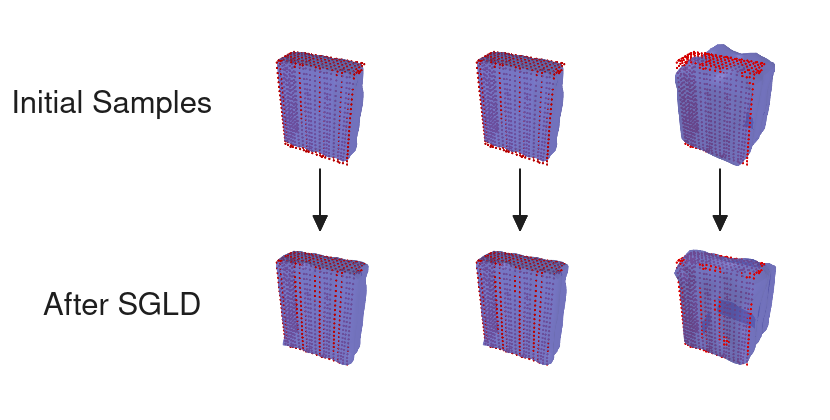

2024 Sep 20
We want to improve on methods like V-PRISM [1] by enforcing priors during reconstruction to better reconstruct the backside of given objects. The current approach we are trying to develop right now uses a precomputed dataset of Hilbert map weights.
Last week, I was able to come up with a multi-step query method for finding relevant weights in the dataset. I also proposed a high-level overview of what our method might look like. The following is a figure of that overview (from last write-up):
The action items / things to work on this week that were identified in the meeting were:
These are the 3 main things that are explored in this write-up. Each has its own section respectively.
I tried out doing SIM(3) optimization instead of SE(3), but it didn’t seem to make much of a difference. Here is a comparison:
I realized that what I was doing last time was suboptimal. I was trying to run regular old gradient descent instead of doing the obvious thing to do when you are up against RAM constraints during an optimization problem: use mini-batches. It would be easy to batch over the query point dimension.
As seen in the figure, the box reconstruction was able to identify the correct dataset weights that we care about. The difference with the mug was less pronounced, but I still feel there is some improvement. Here were the hyperparameters for the pose optimization:
| Parameter | Value |
|---|---|
| Optimizer | Adam |
| Batch size | 128 |
| Num. Epochs | 8 |
| Learning rate | 0.01 |
| Feature dim | 1729 |
| Min dist. from surface | 10 (cm) |
For reference, here is an example of the query samples used for the box:
In the above image there are ~1k points.
I was curious what would happen if you tried to query for an out-of-distribution observation. I used a ShapeNet [2] airplane, and followed the procedure mentioned above:
As you can see from the figure, the chain was the closest to the airplane and the pose optimization found multiple different orientations. I don’t know if there is much insight from the figure, but it does suggest that our refinement ought to be good enough to “overcome” such bad query results that aren’t that close to the true reconstruction.
We want to enforce priors during object reconstruction for a setup similar to V-PRISM. We already have a way to find a few Hilbert map weights for a given observation. We now need to devise a refinement step to complete the reconstruction pipeline. Ideally, we want this to be probabilistic for a couple of reasons: (1) it helps “sell” the paper or tells a better story; (2) We want to capture uncertainty/diversity in reconstructions. We want to do the reconstruction leveraging 1st order gradient information as we have this readily available for the Hilbert map representation. There are also other considerations, here is a list:
For initialization, we could either just randomly select some particles, or (smarter) sample from particles according to their \exp(-\text{BCE}) value. For the prior, we will do a kernel density estimation (KDE) over the queried weights using a Gaussian kernel. This basically means that our prior is a Gaussian mixture model over weights, where each queried weight is the mode of a Gaussian. The bandwidth of these Gaussian kernels will control certain aspects of the optimization and is a hyperparameter that must be tuned. We will have to also define the SE(3) pose as part of the optimization and prior. We can use logmap/expmap for distance, and put a Gaussian kernel around the SE(3) pose for each queried weight.
Here is a figure of the proposed pipeline:
In order to optimize a set of samples, we obviously need to sample them, as mentioned in the above section. Our plan is to use a weighted sampling scheme and sample from our dataset weights. The specific weight for each dataset weight (after registration) is given by: \text{Sampling Weight} = \exp(- BCE(\tilde w; X, y)). Here is an example of what that would mean for our box example:
Note: the scores are not a normalized probability distribution over weights, they are a likelihood of the observed data.
SVGD [3] and SGLD are both ways to “fit” a distribution with samples by leveraging first order information. Generally, the optimization procedures use an update for a particle that takes the following form: x_{t+1}^{(i)} = x_t^{(i)} + \epsilon \phi(x_t^{(i)}), where you can think of \phi as a descent direction.
Stein Variational Gradient Descent: SVGD is a method for fitting particles to a distribution using first order gradients. It approximates the gradient of the KL-divergence with a set of particles. The descent direction from SVGD depends on the other particles: \phi_\text{SVGD}(x) = \frac{1}{N} \sum_j \left[ k(x_j, x) \nabla \ln p(x_j) + \nabla_{x_j} k(x_j, x)\right] Generally, SVGD is performed with mini-batches.
Stochastic Gradient Langevin Dynamics: SGLD is a method from sampling from an unnormalized distribution following a MCMC approach. The descent direction is: \phi_\text{SGLD}(x) = \nabla \ln p(x) + \eta_t, where \eta_t \sim \mathcal N(0, I) is Gaussian noise. In SGLD, the step size is often annealed so that it follows a specific type of curve. As suggested by the term “stochastic”, it is often performed with mini-batches. Langevin dynamics is also a common theoretical explanation of diffusion models, such as in the diffusion policy paper.
I decided to use SGLD instead of SVGD because it was easier to implement. I had to spend a little bit of time tuning the hyperparameters. In order to get things to work, I had to multiply the BCE likelihood score by like 100, which feels hacky.
Reconstruction with Box: I reconstruct the Cheeze-it box from YCB [4] dataset

Reconstruction with Mug: I reconstruct a ShapeNet mug
Here are some GIFs of refinement with the mug:

Reconstruction with Airplane: I reconstruct an airplane from the ShapeNet dataset
Here are some GIFs of refinement with the airplane:
Note: for the GIFs, I ran refinement for 30 epochs, while for the static images above I only ran refinement for 20 epochs
Takeaways: I think that it is promising, however there are a few things to figure out: (1) the reconstructions are not amazing when the initial sample is far from the observed point cloud; (2) there are a lot of hyperparameters to tune, and I’m not confident I have found the best ones; (3) efficiency should be a consideration, having to run multiple optimization procedures can be somewhat slow. I do have a couple questions:
I have the feeling that we need to have better reconstructions for out of distribution objects. I think this is important in ensuring our method is robust. Another worry I have is that uncertainty is not being captured reasonably, which I think is necessary for diverse reconstructions. It feels like there is a balancing game between how strictly the prior is enforced and how well it is robust and diverse.
Questions:
As described above and in previous write-ups, we would first negative sample to do a multi-step query of the dataset to retrieve ground truth weights and optimized poses in SE(3). Then, we would perform refinement as explained in the Performing Reconstruction/Refinement section. The full proposed method here can be summarized in the following picture:
We would want to come up with a justification for this approach. I can think of “hacking” something together and give it a probabilistic argument. I think the argument could go something like this:
I think to make this method effective, we should leverage a dataset other than YCB. ShapeNet is an obvious contender, but also it might make sense to try to get a bunch of different categories that aren’t necessarily found in ShapeNet. OmniObject3D [5] has quite a few classes that could be relevant. One benefit of OmniObject3D is that it isn’t one of the ones used in the original V-PRISM paper, so we could compare on the same procedural scenes without having an unfair advantage. On that note, Objaverse [6] also exists and could be used, however I found those meshes to take a little more effort to sift through and process. Here is a table of mesh datasets exist:
| Dataset | # of classes | # of meshes |
|---|---|---|
| YCB [4] | 56 | 78 |
| ShapeNet [2] | 55 | 51k |
| OmniObject3D [5] | 190 | 6k |
| Objaverse [6] | ? | 10M |
How big of a dataset I can produce is also something to consider. When I try to squeeze every bit of performance out of the lab computer, I can fit around ~1k weights per hour. It would take the whole weekend to create a dataset of ~50k weights. Perhaps we could aim for like 1k weights for a category, and try to do 100 categories (this would take about 4 days to compute). We could then take advantage of rotations and flips to turn this into x8 weights.
A couple of the criticisms of V-PRISM from reviewers centered around the experiments. Mainly, they thought our baseline was slightly out of date, there was a lack of connecting it to a downstream task, and they wished there were more ablations and quantitative real world experimentation.
Baselines:
Experiments:
I want to work on the following:
Beyond next week, I think we should start thinking about: